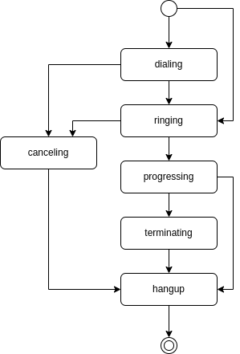

Struct Call
Call
{
"id": "<string>",
"flow_id": "<string>",
"type": "<string>",
"master_call_id": "<string>",
"chained_call_ids": [
"<string>",
...
],
"recording_id": "<string>",
"recording_ids": [
"<string>",
...
],
"source": {
...
},
"destination": {
...
},
"status": "<string>",
"action": {
...
},
"direction": "<string>",
"hangup_by": "<string>",
"hangup_reason": "<string>",
"tm_create": "<string>",
"tm_update": "<string>",
"tm_progressing": "<string>",
"tm_ringing": "<string>",
"tm_hangup": "<string>"
}
id(UUID): The call’s unique identifier. Returned when creating a call viaPOST /callsor when listing calls viaGET /calls.flow_id(UUID): The flow associated with this call. Obtained from theidfield ofGET /flows. Set to00000000-0000-0000-0000-000000000000if no flow is assigned.type(enum string): The call’s type. See Type.master_call_id(UUID): The master call’s ID in a call chain. Obtained from another call’sidfield. If set, this call follows the master call’s hangup. Set to00000000-0000-0000-0000-000000000000if this call has no master.chained_call_ids(Array of UUID): List of chained call IDs linked to this call. Each ID is a callidfromGET /calls. When this call hangs up, all chained calls also hang up.recording_id(UUID): The currently active recording’s ID. Obtained fromGET /recordings. Set to00000000-0000-0000-0000-000000000000if no recording is active.recording_ids(Array of UUID): List of all recording IDs created during this call’s lifetime. Each ID can be used withGET /recordings/{id}to retrieve the recording.source(Object): Source address info. See Address.destination(Object): Destination address info. See Address.status(enum string): The call’s current status. See Status.action(Object): The call’s currently executing flow action. See Action.direction(enum string): The call’s direction. See Direction.hangup_by(enum string): Which endpoint initiated the hangup. See Hangup by.hangup_reason(enum string): The reason the call ended. See Hangup reason.tm_create(string, ISO 8601): Timestamp when the call was created.tm_update(string, ISO 8601): Timestamp of the last update to any call property.tm_progressing(string, ISO 8601): Timestamp when the call was answered.tm_ringing(string, ISO 8601): Timestamp when the destination started ringing.tm_hangup(string, ISO 8601): Timestamp when the call ended.
Note
AI Implementation Hint
Timestamps set to 9999-01-01 00:00:00.000000 indicate the event has not yet occurred. For example, tm_hangup with this value means the call is still in progress.
Example
{
"id": "d9d32881-12fd-4b19-a6b2-6d5b6b6acf76",
"flow_id": "4553c074-c88d-49e5-9d47-5c01598ac099",
"type": "flow",
"master_call_id": "00000000-0000-0000-0000-000000000000",
"chained_call_ids": [],
"recording_id": "00000000-0000-0000-0000-000000000000",
"recording_ids": [],
"source": {
"type": "tel",
"target": "+15551234567",
"target_name": "",
"name": "",
"detail": ""
},
"destination": {
"type": "tel",
"target": "+15559876543",
"target_name": "",
"name": "",
"detail": ""
},
"status": "hangup",
"action": {
"id": "0db08d32-b7d7-470d-8bda-9feff0877077",
"next_id": "00000000-0000-0000-0000-000000000000",
"type": "talk",
"option": {
"text": "Hello. Thank you for calling. How can I help you today?",
"language": "en-US"
},
"tm_execute": "2022-05-01 15:10:38.785510878"
},
"direction": "outgoing",
"hangup_by": "local",
"hangup_reason": "normal",
"tm_create": "2022-05-01 15:10:23.414798",
"tm_update": "2022-05-01 15:10:44.781000",
"tm_progressing": "2022-05-01 15:10:38.721000",
"tm_ringing": "2022-05-01 15:10:26.978000",
"tm_hangup": "2022-05-01 15:10:44.781000"
}
Type
Call’s type (enum string).
Type |
Description |
|---|---|
flow |
Executing a call flow. The call runs the actions defined in the associated flow. |
conference |
Conference call. The call is part of a multi-party conference. |
sip-service |
SIP service call. Executes the pre-defined SIP service corresponding to the destination. |
Status
Call’s current status (enum string). States only move forward, never backward.
Status |
Description |
|---|---|
dialing |
The call is created. The system is dialing the destination through the phone network. |
ringing |
The destination has confirmed the call is ringing. The callee can now answer. |
progressing |
The call has been answered. Both endpoints can hear each other and media is flowing. |
terminating |
The system is ending the call. This occurs when the application hangs up or a flow action ends the call. |
canceling |
The call originator is canceling the call before the destination answered. Only applies to outgoing calls. |
hangup |
The call has ended. This is the final state — no further changes are possible. |
state diagram
Direction
Call’s direction (enum string).
Direction |
Description |
|---|---|
incoming |
The call originated from outside VoIPBIN (e.g., a PSTN caller dialing a VoIPBIN number). |
outgoing |
The call was initiated by VoIPBIN (e.g., via |
Hangup by
Which endpoint sent the hangup request first (enum string).
hangup by |
Description |
|---|---|
remote |
The remote end (the other party) hung up the call first. |
local |
The local end (your application or flow action) hung up the call first. |
Hangup reason
The reason the call ended (enum string).
Reason |
Description |
|---|---|
normal |
The call ended normally after being answered. Someone hung up. |
failed |
The call attempt did not reach the phone network. Network or routing failure. |
busy |
The destination is on another call. |
cancel |
The call was cancelled by the originator before the destination answered. |
timeout |
The call exceeded the maximum allowed duration after being answered. |
noanswer |
The destination did not answer before the destination’s ring timeout expired. |
dialout |
The call exceeded VoIPBIN’s dialing timeout before being answered. This is VoIPBIN’s own timeout for outgoing calls. |
amd |
The Answering Machine Detection (AMD) action detected a voicemail and hung up the call according to your AMD settings. |